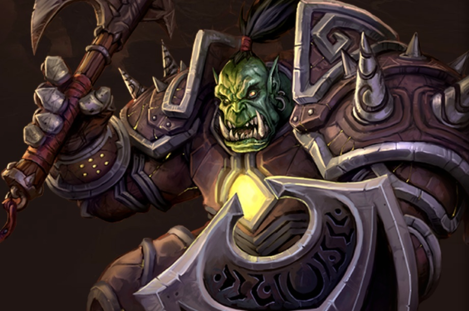
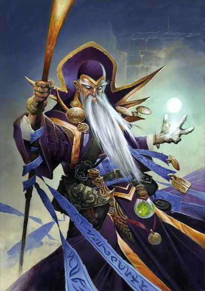
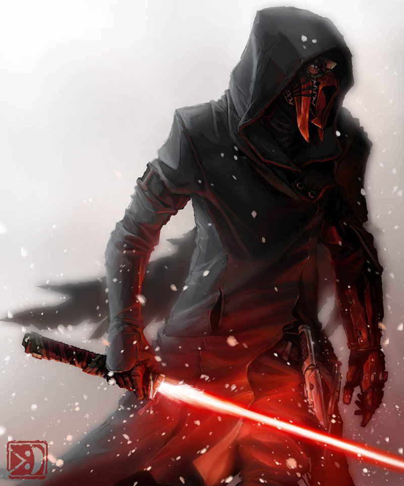

戰士 Warrior
戰士們重裝上陣，與敵人正面交鋒，無視於敵人在他們鎧甲上擦身而過的攻擊。 他們運用變化多端的戰術與多款各式武器來保護較脆弱的隊友。 怒氣是戰士們強力攻擊的原動力，因此他們必須小心運用怒氣，在戰鬥中發揮最大效益。

法師 Mage
秘法咒語讓法師面對敵人時無往不利。即使法師能施展強大破壞力的法術，但本身卻極為脆弱且護甲單薄，在近身攻擊中特別容易吃虧。有智慧的法師會謹慎的運用法術，將敵人控制在一定的距離之外或困住他們

獵人 Hunter
會與對手遠距交戰，在射箭或開槍的同時，他們的寵物就會聽令發動攻擊。即使這種遠程攻擊武器殺傷力十足，一旦敵人近距離接觸，就會對獵人不利，所以他們通常會設法避開或困住敵人，才能在安全距離下持續發動攻擊。

盜賊 Rogue
盜賊經常自暗處意外出沒，惡毒地近身突襲對手。在持久戰之中，他們所採取的是小心翼翼地連續攻擊，不斷削弱對手直到一擊斃命。盜賊在選擇對手時需特別謹慎，以免浪費連擊的效果；而他們也必須保持警覺，在戰況不利時隱匿或逃脫